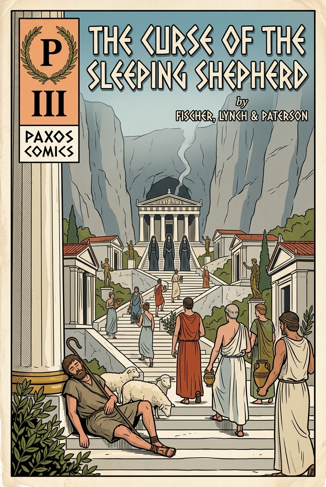
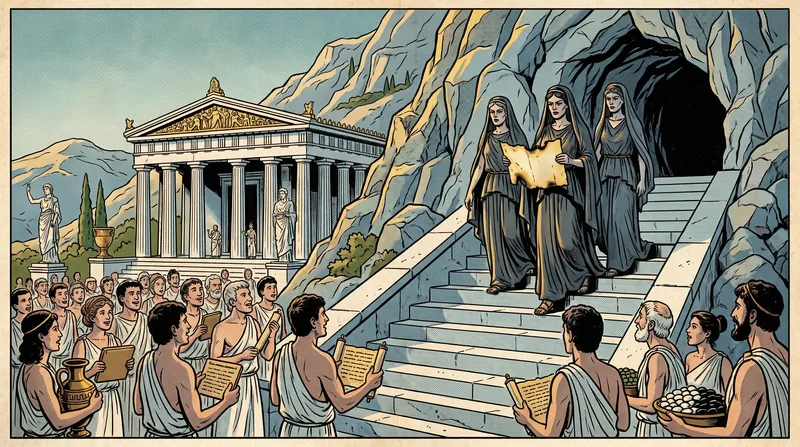
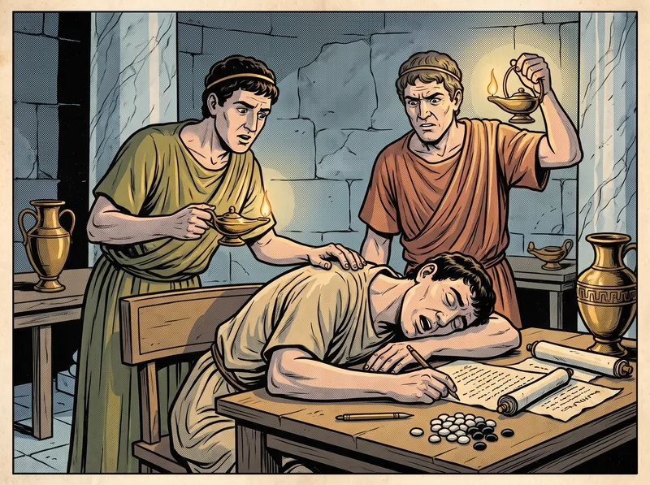
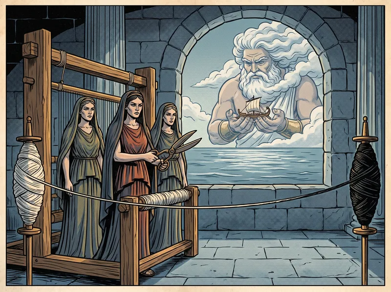
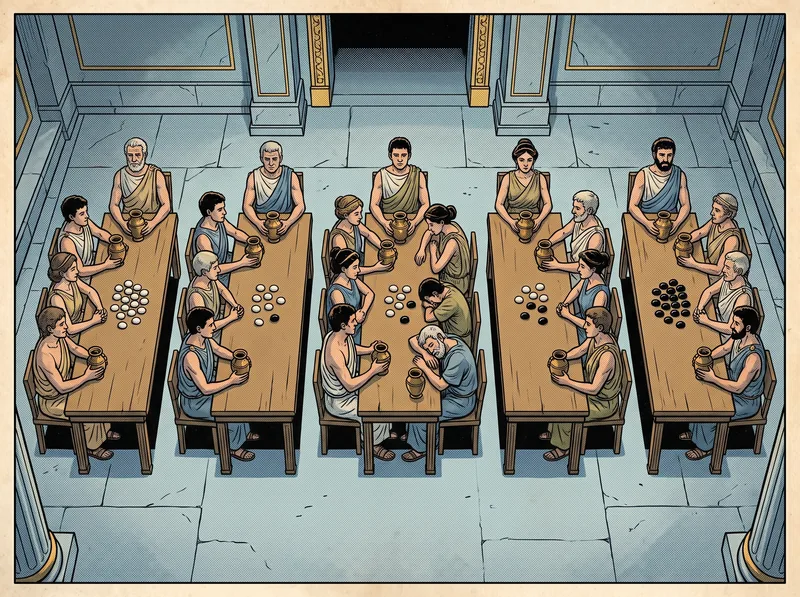
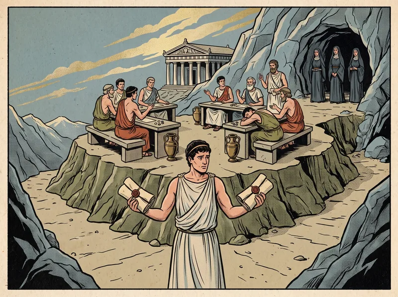
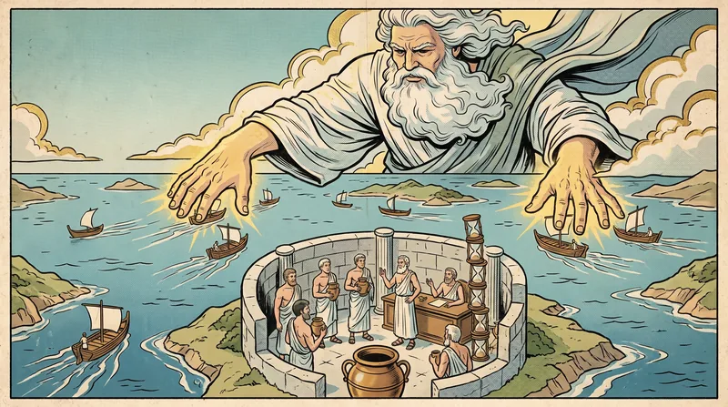
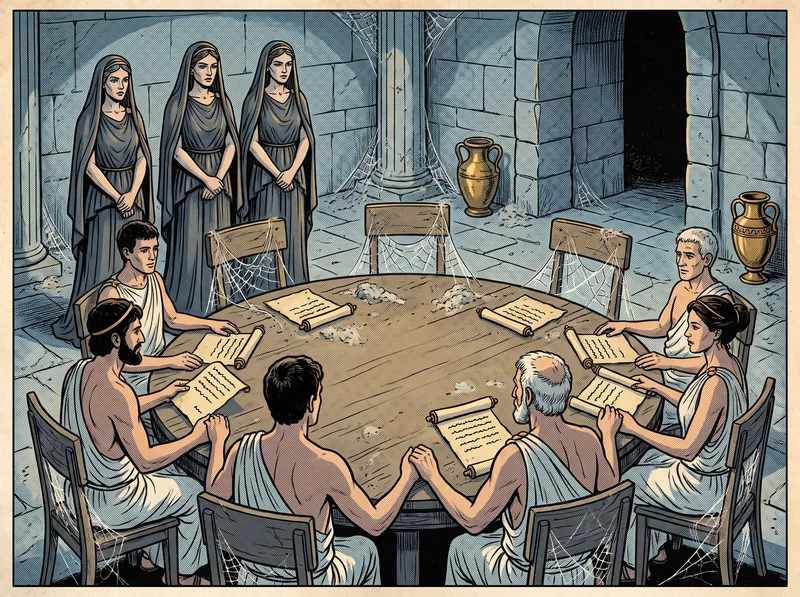

Fischer, Lynch & Paterson, 1985
After M. J. Fischer, N. A. Lynch & M. S. Paterson, “Impossibility of Distributed Consensus with One Faulty Process,” JACM 32, 2 (April 1985), 374–382. Retold as the prophecy of Delphi, with the proof intact.
Most prophecies from Delphi are famous for their ambiguity. This one is famous for having none. It was delivered by three priestesses — Φίσερ, Λίντς and Πάτερσον — in the form of a proof, nine columns long, which the islanders at first refused to believe and later carved over the entrance of every council chamber in the Aegean.
I have translated the proof in full. It is the shortest document in this series and the one that governs all the others. Readers of Volumes V through IX who wonder why each parliament is so careful to promise only that it will eventually decide, and only when the weather is fair, will find the reason here.
— The Translator

Reaching agreement among delegates on distant islands is one of the most fundamental problems of the archipelago. It lies at the core of every common treasury, every shared ledger, and every guild that must act as one. In its best-known form, it is the problem of the cargo guild: all the warehouse-keepers who have handled part of a merchant’s cargo must agree whether to commit it — record the sale in every warehouse — or to discard it, as they must if any keeper was unable to do his part. Whatever is decided, all must decide the same, or the guild’s books will no longer agree.
With perfectly reliable keepers and perfectly reliable boats this is straightforward. But real keepers fall ill, storms cut islands off, and letters are lost, garbled or delivered twice. One may even consider keepers who go completely mad, sending letters according to some malevolent plan, as the generals of Volume II did. Any rite can be overwhelmed by faults that are too frequent or too severe, so the best one can hope for is a rite that tolerates a prescribed number of them.
The priestesses’ result was that no such rite, if it is completely asynchronous, can tolerate even a single unannounced sleeper. They did not consider mad keepers. They assumed the boats were perfectly reliable — every letter delivered correctly and exactly once. And still, the falling asleep of one keeper at an inopportune moment can prevent any cargo guild from ever reaching a verdict.
Crucial to the proof is that the archipelago is completely asynchronous. Nothing is assumed about how fast the delegates think or how long boats take to cross. The delegates have no synchronized water-clocks, so no rite may say “if no letter has come by noon, assume the sender is asleep.”1 And no delegate can detect that another has fallen asleep, so it is impossible for one to tell whether another has stopped entirely or is merely very, very slow.

The result applies even to a very weak form of agreement. Every delegate begins with a pebble, white or black. A delegate who is awake decides by dropping a white or black token into his own bronze urn, and the urn, once filled, can never be emptied. All delegates who decide must choose the same colour. For the purpose of the proof, the priestesses required only that some delegate eventually decide — of course, any rite worth having would require that every waking delegate decide. The trivial rite in which everyone always drops a white token is excluded by requiring that both colours be possible verdicts, perhaps from different starting pebbles.
The priestesses described the council in terms deliberately generous to it, so that their curse would bind as many rites as possible. A delegate may be as clever as he likes and keep as many notes as he likes. He may broadcast the same letter to everyone at once, with the guarantee that if any waking delegate receives it, all will. Letters are never lost. The only thing the sea is permitted to do is to take its time.
A council is an asynchronous system of N ≥ 2 delegates. Each delegate p has a pebble xp ∈ {0, 1} (white or black), an urn yp with values in {b, 0, 1} starting empty (b), and unbounded notes. Together these make up his state. States in which the urn holds 0 or 1 are decision states. A delegate acts deterministically, according to a fixed rule, and the rule cannot empty an urn once it is filled.
Letters are pairs (p, m): a destination delegate and a message. All letters sent but not yet delivered wait in the harbour, a jumble (a multiset) of undelivered letters. The harbour supports two operations:
The harbour acts nondeterministically, subject to one condition: if receive(p) is performed infinitely often, every letter for p is eventually delivered. In particular, the harbourmaster may hand p nothing a finite number of times even though a letter for him is sitting on the quay.2
A configuration is the state of every delegate together with the contents of the harbour. A step is taken by one delegate p: he performs receive(p), obtaining some m or ∅, and then, depending on his state and m, enters a new state and sends a finite set of letters. Because delegates are deterministic, the step is fully determined by the event e = (p, m) — the receipt of m by p — and we write e(C) for the resulting configuration. The event (p, ∅) can always be applied, so a delegate can always take another step. A schedule is a sequence of events applied in turn; its steps form a run; a configuration reachable from an initial one is accessible.
Suppose that from a configuration C the schedules σ1, σ2 lead to configurations C1, C2. If the sets of delegates taking steps in σ1 and σ2 are disjoint, then σ2 can be applied to C1 and σ1 to C2, and both lead to the same configuration C3.
The proof is immediate: σ1 and σ2 involve different delegates and do not interact. It is the scholar’s partial order of Volume I in disguise.
A configuration has decision value v if some delegate’s urn holds v.
A delegate is awake (nonfaulty) in a run if he takes infinitely many steps, and asleep (faulty) otherwise. A run is admissible if at most one delegate is asleep and every letter sent to a waking delegate is eventually received. A run is deciding if some delegate reaches a decision state. A rite is totally correct in spite of one fault if it is partially correct and every admissible run is deciding.
No consensus rite is totally correct in spite of one fault.
Assume, to the contrary, that some rite P is totally correct in spite of one fault. The priestesses’ plan has two steps. First, show that there is some starting arrangement of pebbles from which the verdict is not already fated. Second, show how Aeolus can build an admissible run that never takes the one step that would fix the verdict.
Let C be a configuration and V the set of decision values of configurations reachable from C. C is bivalent if |V| = 2 — both verdicts are still possible. C is univalent if |V| = 1, and then 0-valent or 1-valent accordingly. (By total correctness, V is never empty.)

P has a bivalent initial configuration.

The second lemma is the heart of the curse. It says that from any undecided configuration, no single letter can be forced to settle the verdict: Aeolus can always hold that letter back until a moment when delivering it leaves the council still undecided.
Let C be a bivalent configuration of P, and let e = (p, m) be an event applicable to C. Let 𝒞 be the set of configurations reachable from C without applying e, and let 𝒟 = e(𝒞) = {e(E) | E ∈ 𝒞}. Then 𝒟 contains a bivalent configuration.

Case 2 deserves a moment. The only way a single letter could fix the verdict is if the difference between two nearly identical futures lies entirely in the order in which one delegate, p, reads two of his letters. But then the rest of the council must be able to reach a decision while p is asleep — that is the one fault the rite promises to tolerate — and that decision cannot depend on what p has not yet read. The council would have decided on something that, a moment later, could still go either way.
Any deciding run from a bivalent start must at some step pass from a bivalent configuration to a univalent one; that single step fixes the verdict. The priestesses now showed that Aeolus can always run the council so as to avoid every such step, while keeping the run perfectly admissible.
Aeolus builds the run in stages, from a bivalent initial configuration given by Lemma 2. He keeps a queue of delegates, in any order, and considers each delegate’s letters in the order they were sent, earliest first. Each stage ends with the delegate at the head of the queue taking a step in which — if he had any letter waiting at the start of the stage — he receives his earliest one; that delegate then goes to the back of the queue. In any infinite sequence of such stages, every delegate takes infinitely many steps and receives every letter sent to him. The run is admissible: no one is even asleep.
Suppose a stage begins at a bivalent configuration C, with delegate p at the head of the queue and m his earliest letter (or ∅). Let e = (p, m). By Lemma 3, some bivalent C′ is reachable from C by a schedule whose last event is e. Those steps are the stage. Every stage begins and ends bivalent, every stage succeeds, and no decision is ever reached. ∎

Note the precise shape of the curse, since the later volumes are all built in its shadow. The run Aeolus constructs is not one in which a delegate fails. The mere possibility that one might fail forces the rite to be willing to decide without him, and that willingness is what Aeolus exploits. No letter is lost; every letter eventually arrives. Nor is the rite made to contradict itself: a council may keep safety — never two verdicts — unconditionally. It is liveness, the promise to eventually decide, that cannot also be guaranteed.3
Lest the islanders despair completely, the priestesses showed what can be done if the sleeper is restricted to having been asleep from the very beginning. Suppose a strict majority of delegates are awake at the start and no one falls asleep during the rite, though no one knows in advance which delegates never arrived. Let L = ⌈(N + 1)/2⌉.

There is a partially correct consensus rite in which all waking delegates always reach a decision, provided no delegate falls asleep during its execution and a strict majority are awake initially.
The priestesses were careful about what they had shown. A natural and important problem of cooperative government cannot be solved in a totally asynchronous archipelago. This does not mean such problems cannot be “solved” in practice. It means the islanders need more refined descriptions of their sea — descriptions that better reflect how long boats and delegates really take — and less stringent requirements on a rite, such as requiring it to finish only with probability one.
Between the first announcement of the curse and its final carving, progress was made along both paths. Some councils cast lots, so that no deterministic Aeolus could predict their next move;4 others asked what could be promised if the sea, however stormy, eventually calmed. The second path is the subject of Volume IV.
| At Delphi | In the paper |
|---|---|
| Delegate | Deterministic process (automaton) |
| Pebble / bronze urn | Input register xp / write-once output register yp |
| The harbour, Aeolus | Message buffer; the adversarial scheduler |
| Sleeping shepherd | Crash-stop (fail-stop) process that is never detected |
| No water-clocks | Fully asynchronous model: no bounds on delay, no clocks, no failure detection |
| Both verdicts still on the loom | Bivalent configuration |
| Aeolus’s endless stages | The admissible non-deciding run constructed from Lemma 3 |
| Cargo guild | Distributed transaction commit |
The FLP result is why every practical consensus protocol relaxes one of its assumptions. Paxos (Volume V), Viewstamped Replication (VI), PBFT (VII) and Raft (IX) are all always safe and live only under partial synchrony (Volume IV): they use timeouts to suspect failures and elect leaders, and they may fail to make progress while the network misbehaves. Randomized protocols instead guarantee termination with probability 1. Neither “defeats” FLP; both decline a promise that FLP shows cannot be kept.
The modern mathematical proofs that inspired this volume are preserved in the archive: